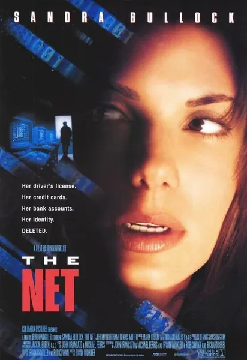

Сеть
The Net
1995
Драма, Триллер
Анджела Беннет, программист-аналитик, большую часть жизни проводящая в интернете, получает дискету с бэкдором для доступа к системе безопасности и оказывается втянутой в заговор: её личность переписывается, её дом продаётся, и теперь её имя принадлежит женщине с судимостью. Фильм показывает интернет образца 1995 года — еще до того, как он стал массовым явлением: IRC, платежные системы, удаленная работа — всё это уже тогда представляло собой уязвимости для кибератак. Классика жанра, появившаяся еще до Google, Facebook и Wi-Fi.
Описание на английском
Angela Bennett, a programmer-analyst who lives most of her life online, receives a floppy with a backdoor into a security system and stumbles into the middle of a conspiracy: her identity is rewritten, her home is sold, and her name now belongs to a woman with a record. The 1995 internet is shown here before millions ever met it: IRC, payment systems, remote work — all already an attack surface. A genre classic, older than Google, Facebook and Wi-Fi.